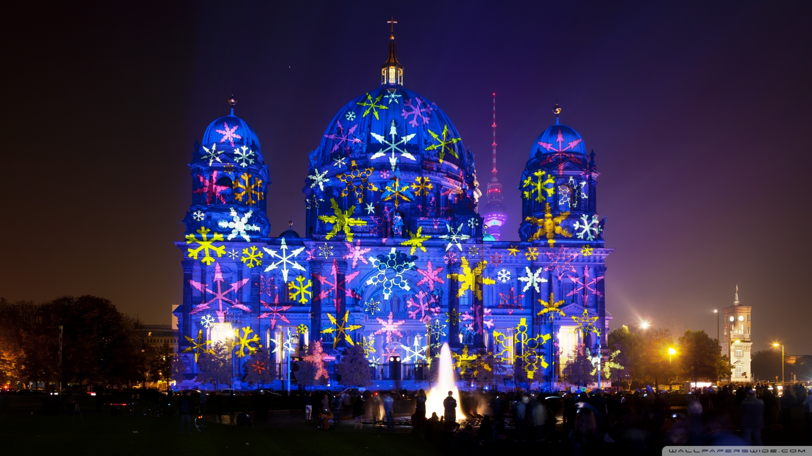

Ночь Гая Фокса
5 ноября в Великобритании и всех ее бывших колониях отмечается Ночь Гая Фокса. Этот традиционный
праздник также называют Ночью Костров и Фейерверков, поскольку в этот день улицы городов
наполняются тысячами огней, а небо разрывают сотни петард.
Венский Оперный бал
Что объединяет шикарное событие на 1500 гостей, танцевальные па вальса, танго и фокстрота,
первый выход в свет, выступления мировых звезд классической музыки, Европейский прием и благие
намерения? Конечно же, Венский оперный бал, который с 2003 года вот уже 12 лет проводится в
Москве. Столь красивое значимое событие, которое стало отличительной особенностью Вены, занесено
ЮНЕСКО в список нематериального культурного наследия. И не зря, ведь масштабное мероприятие с
благотворительной миссией, на котором знакомятся, танцуют удивительные классически танцы и
всячески изысканно проводят свое время благородные леди и джентльмены, — это именно то, что
навсегда останется в истории этого мира
День независимости Греции
В столице Греции Афинах в этот день происходит военный парад и торжественное шествие (греч.
Παρέλαση 25ης Μαρτίο) и массовые праздничные мероприятия, как светские, так и
религиозные[2]. В 2010 году в Афинах к параду архиепископ Афинский и всея Эллады Иероним II
совершил доксологию, с участием Президента Греции Каролоса Папульяса, министра
здравоохранения Марилиза Ксенояннакопулу, которая представляла правительство, и спикера
Греческого парламента Филиппоса Пецальникоса[3].
Фестиваль света

Культурная жизнь Берлина наполнена множеством ярких событий. Но самым ярким в прямом
смысле этого слова является Фестиваль света, который проходит каждый год в середине
октября. В течение 10 дней с наступлением темноты облик города преображают сотни
прожекторов, лазеров и фейерверков. Бранденбургские ворота, Александрплац, телебашня,
Берлинский собор и еще около 100 самых красивых сооружений становятся объектами
масштабных инсталляций.